Señales de Instrumentación
Señales analógicas y digitales
La instrumentación es un campo de estudio y trabajo centrado en la medición y control de procesos físicos. Estos procesos físicos incluyen presión, temperatura, caudal y consistencia química. Un instrumento es un dispositivo que mide y/o actúa para controlar cualquier tipo de proceso físico. Debido a que las cantidades eléctricas de voltaje y corriente son fáciles de medir, manipular y transmitir a largas distancias, se utilizan ampliamente para representar dichas variables físicas y transmitir la información a ubicaciones remotas.
A señalEs cualquier tipo de cantidad física que transmite información. El habla audible es ciertamente un tipo de señal, ya que transmite los pensamientos (información) de una persona a otra a través del medio físico del sonido. Los gestos con las manos también son señales que transmiten información a través de la luz. Este texto es otro tipo de señal, interpretada por tu mente entrenada en inglés como información sobre circuitos eléctricos. En este capítulo, la palabraseñalse utilizará principalmente en referencia a una cantidad eléctrica de voltaje o corriente que se utiliza pararepresentar or significaralguna otra cantidad física.
An cosa análogaLa señal es un tipo de señal que es continuamente variable, en lugar de tener un número limitado de pasos a lo largo de su rango (llamadodigital). Un ejemplo bien conocido de analógico versus digital es el de los relojes: analógico es el tipo con punteros que giran lentamente alrededor de una escala circular, y digital es el tipo con pantallas de números decimales o un "segundero" que se mueve bruscamente en lugar de girar suavemente. El reloj analógico no tiene límite físico en cuanto a la precisión con la que puede mostrar la hora, ya que sus "manecillas" se mueven de forma suave y sin pausas. El reloj digital, por otro lado, no puede transmitir ninguna unidad de tiempo más pequeña de lo que permite su pantalla. El tipo de reloj con un "segundero" que da tirones en intervalos de 1 segundo es un dispositivo digital con un mínimoresoluciónde un segundo.
Tanto las señales analógicas como las digitales encuentran aplicación en la electrónica moderna, y las distinciones entre estas dos formas básicas de información se tratarán con mucho mayor detalle más adelante en este libro. Por ahora, limitaré el alcance de esta discusión a las señales analógicas, ya que los sistemas que las utilizan tienden a ser de diseño más simple.
Con muchas cantidades físicas, especialmente eléctricas, la variabilidad analógica es fácil de conseguir. Si dicha cantidad física se utiliza como medio de señal, podrá representar variaciones de información con una resolución casi ilimitada.
En los primeros días de la instrumentación industrial, el aire comprimido se utilizaba como medio de señalización para transmitir información desde los instrumentos de medición a los dispositivos de indicación y control ubicados de forma remota. La cantidad de presión del aire correspondía a la magnitud de cualquier variable que se estuviera midiendo. Se suministró aire limpio y seco a aproximadamente 20 libras por pulgada cuadrada (PSI) desde un compresor de aire a través de una tubería hasta el instrumento de medición y luego ese instrumento lo reguló de acuerdo con la cantidad que se estaba midiendo para producir una señal de salida correspondiente. Por ejemplo, un dispositivo "transmisor" de nivel neumático (señal de aire) configurado para medir la altura del agua (la "variable de proceso") en un tanque de almacenamiento generaría una presión de aire baja cuando el tanque estaba vacío, una presión media cuando el tanque estaba parcialmente lleno y una presión alta cuando el tanque estaba completamente lleno.
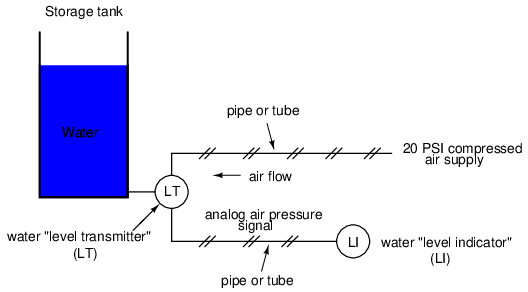
El "indicador de nivel de agua" (LI) no es más que un manómetro que mide la presión del aire en la línea de señal neumática. Esta presión del aire, al ser unaseñal, es a su vez una representación del nivel del agua en el tanque. Cualquier variación de nivel en el tanque puede representarse mediante una variación adecuada de la presión de la señal neumática. Aparte de ciertos límites prácticos impuestos por la mecánica de los dispositivos de presión de aire, esta señal neumática es infinitamente variable, capaz de representar cualquier grado de cambio en el nivel del agua y, por lo tanto, escosa análogaen el verdadero sentido de la palabra.
Por tosco que parezca, este tipo de sistema de señalización neumática formó la columna vertebral de muchos sistemas de control y medición industriales en todo el mundo, y todavía se utiliza hoy en día debido a su simplicidad, seguridad y confiabilidad. Las señales de presión del aire se transmiten fácilmente a través de tubos económicos, se miden fácilmente (con manómetros mecánicos) y se manipulan fácilmente mediante dispositivos mecánicos que utilizan fuelles, diafragmas, válvulas y otros dispositivos neumáticos. Las señales de presión del aire no sólo son útiles paramediciónprocesos físicos, pero paracontroladorellos también. Con un pistón o diafragma lo suficientemente grande, se puede utilizar una pequeña señal de presión de aire para generar una fuerza mecánica grande, que se puede utilizar para mover una válvula u otro dispositivo de control. Se han fabricado sistemas de control automático completos utilizando la presión del aire como medio de señal. Son simples, confiables y relativamente fáciles de entender. Sin embargo, los límites prácticos para la precisión de la señal de presión del aire pueden ser demasiado limitantes en algunos casos, especialmente cuando el aire comprimido no está limpio y seco, y cuando existe la posibilidad de fugas en los tubos.
Con la llegada de los amplificadores electrónicos de estado sólido y otros avances tecnológicos, las cantidades eléctricas de voltaje y corriente se volvieron prácticas para su uso como medios de señalización de instrumentos analógicos. En lugar de utilizar señales de presión neumática para transmitir información sobre la plenitud de un tanque de almacenamiento de agua, las señales eléctricas podrían transmitir esa misma información a través de cables delgados (en lugar de tubos) y no requerir el soporte de equipos tan costosos como compresores de aire para funcionar:
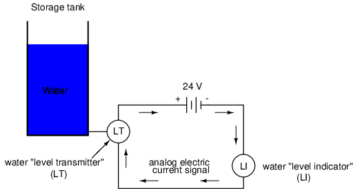
Las señales electrónicas analógicas siguen siendo los principales tipos de señales utilizadas en el mundo de la instrumentación actual (enero de 2001), pero están dando paso a los modos digitales de comunicación en muchas aplicaciones (más sobre ese tema más adelante). A pesar de los cambios en la tecnología, siempre es bueno tener un conocimiento profundo de los principios fundamentales, por lo que la siguiente información nunca quedará obsoleta.
Un concepto importante que se aplica en muchos sistemas de señales de instrumentación analógica es el de "cero vivo", una forma estándar de escalar una señal de modo que una indicación de 0 por ciento pueda discriminarse del estado de un sistema "muerto". Tome el sistema de señal neumática como ejemplo: si el rango de presión de la señal para el transmisor y el indicador fue diseñado para ser de 0 a 12 PSI, donde 0 PSI representa el 0 por ciento de la medición del proceso y 12 PSI representa el 100 por ciento, una señal recibida del 0 por ciento podría ser una lectura legítima de la medición del 0 por ciento.orpodría significar que el sistema no funciona correctamente (compresor de aire parado, tubería rota, mal funcionamiento del transmisor, etc.). Con el 0 punto porcentual representado por 0 PSI, no habría una manera fácil de distinguir uno del otro.
Sin embargo, si tuviéramos que escalar los instrumentos (transmisor e indicador) para usar una escala de 3 a 15 PSI, donde 3 PSI representan 0 por ciento y 15 PSI representan 100 por ciento, cualquier tipo de mal funcionamiento que resulte en una presión de aire cero en el indicador generaría una lectura de -25 por ciento (0 PSI), que es claramente un valor defectuoso. La persona que mire el indicador podrá darse cuenta inmediatamente de que algo anda mal.
No todos los estándares de señales se han configurado con líneas de base cero activas, pero los estándares de señales más robustos (3-15 PSI, 4-20 mA) sí lo han hecho, y por una buena razón.
- REVISAR:
- A señales cualquier tipo de cantidad detectable utilizada para comunicar información.
- An cosa análogaUna señal es una señal que puede variarse de forma continua o infinita para representar cualquier pequeña cantidad de cambio.
- NeumáticoLas señales de presión de aire, o presión del aire, solían usarse predominantemente en sistemas de señales de instrumentación industrial. Esto ha sido reemplazado en gran medida por señales eléctricas analógicas como voltaje y corriente.
- A vivir cerose refiere a una escala de señal analógica que utiliza una cantidad distinta de cero para representar el 0 por ciento de la medición del mundo real, de modo que cualquier mal funcionamiento del sistema que resulte en un estado natural de "reposo" de presión, voltaje o corriente de señal cero pueda reconocerse inmediatamente.
Sistemas de señal de tensión
El uso de voltaje variable para señales de instrumentación parece una opción bastante obvia a explorar. Veamos cómo se podría usar un instrumento de señal de voltaje para medir y transmitir información sobre el nivel del tanque de agua:
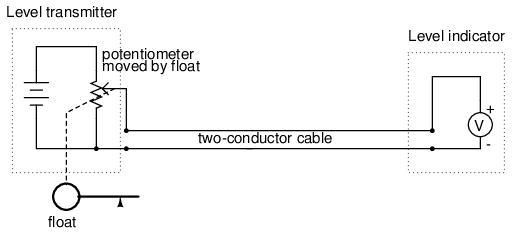
El "transmisor" en este diagrama contiene su propia fuente de voltaje regulada con precisión, y la configuración del potenciómetro varía mediante el movimiento de un flotador dentro del tanque de agua siguiendo el nivel del agua. El "indicador" no es más que un voltímetro con una escala calibrada para leer en alguna unidad de altura del agua (pulgadas, pies, metros) en lugar de voltios.
A medida que cambie el nivel del tanque de agua, el flotador se moverá. A medida que se mueve el flotador, el limpiador del potenciómetro se moverá correspondientemente, dividiendo una proporción diferente del voltaje de la batería para pasar por el cable de dos conductores y llegar al indicador de nivel. Como resultado, el voltaje recibido por el indicador será representativo del nivel de agua en el tanque de almacenamiento.
Este sistema elemental de transmisor/indicador es confiable y fácil de entender, pero tiene sus limitaciones. Quizás lo mejor sea el hecho de que la precisión del sistema puede verse influenciada por una resistencia excesiva del cable. Recuerde que los voltímetros reales consumen pequeñas cantidades de corriente, aunque lo ideal es que un voltímetro no consuma corriente alguna. Siendo este el caso, especialmente para el tipo de movimiento de medidor analógico pesado y resistente que probablemente se usa para un sistema de calidad industrial, habrá una pequeña cantidad de corriente a través de los cables de 2 conductores. El cable, que tiene una pequeña cantidad de resistencia a lo largo de su longitud, en consecuencia caerá una pequeña cantidad de voltaje, dejando menos voltaje a través de los cables del indicador que el que hay a través de los cables del transmisor. Esta pérdida de tensión, por pequeña que sea, constituye un error de medición:
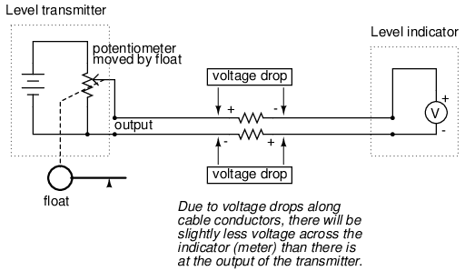
Se han agregado símbolos de resistencia a los alambres del cable para mostrar lo que sucede en un sistema real. Tenga en cuenta que estas resistencias se pueden minimizar con cables de gran calibre (con un costo adicional) y/o sus efectos mitigados mediante el uso de un voltímetro de alta resistencia (¿equilibrio nulo?) como indicador (con una complejidad adicional).
A pesar de esta desventaja inherente, las señales de voltaje todavía se utilizan en muchas aplicaciones debido a su extrema simplicidad de diseño. Un estándar de señal común es de 0 a 10 voltios, lo que significa que una señal de 0 voltios representa el 0 por ciento de la medición, 10 voltios representa el 100 por ciento de la medición, 5 voltios representa el 50 por ciento de la medición, y así sucesivamente. Los instrumentos diseñados para emitir y/o aceptar este rango de señal estándar están disponibles para su compra a través de los principales fabricantes. Un rango de voltaje más común es de 1 a 5 voltios, lo que utiliza el concepto de "cero activo" para la indicación de fallas del circuito.
- REVISAR:
- El voltaje CC se puede utilizar como señal analógica para transmitir información de un lugar a otro.
- Una desventaja importante de la señalización de voltaje es la posibilidad de que el voltaje en el indicador (voltímetro) sea menor que el voltaje en la fuente de señal, debido a la resistencia de la línea y al consumo de corriente del indicador. Esta caída de voltaje a lo largo de la longitud del conductor constituye un error de medición desde el transmisor al indicador.
Sistemas de señal de corriente
Es posible mediante el uso de amplificadores electrónicos diseñar un circuito que produzca una cantidad constante de corriente en lugar de una cantidad constante de voltaje. Esta colección de componentes se conoce colectivamente comofuente actual, y su símbolo se ve así:
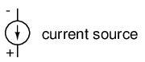
Una fuente de corriente genera tanto o tan poco voltaje como sea necesario a través de sus cables para producir una cantidad constante de corriente a través de él. Esto es justo lo opuesto a una fuente de voltaje (una batería ideal), que generará tanta o tan poca corriente como la demanda el circuito externo para mantener constante su voltaje de salida. Siguiendo la simbología de "flujo convencional" típica de los dispositivos electrónicos, la flecha apuntacontrala dirección del movimiento de los electrones. Disculpas por esta notación confusa: ¡otro legado de la falsa suposición de Benjamin Franklin sobre el flujo de electrones!
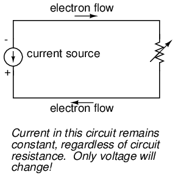
Las fuentes de corriente pueden construirse como dispositivos variables, al igual que las fuentes de voltaje, y pueden diseñarse para producir cantidades de corriente muy precisas. Si se construyera un dispositivo transmisor con una fuente de corriente variable en lugar de una fuente de voltaje variable, podríamos diseñar un sistema de señal de instrumentación basado en corriente en lugar de voltaje:
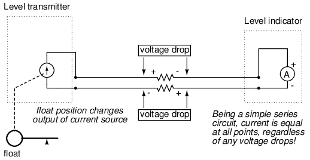
El funcionamiento interno de la fuente de corriente del transmisor no tiene por qué ser una preocupación en este punto, sólo el hecho de que su salida varía en respuesta a los cambios en la posición de flotación, al igual que la configuración del potenciómetro en el sistema de señal de voltaje variaba la salida de voltaje según la posición de flotación.
Observemos ahora cómo el indicador es un amperímetro en lugar de un voltímetro (la escala se calibra en pulgadas, pies o metros de agua en el tanque, como siempre). Debido a que el circuito tiene una configuración en serie (que tiene en cuenta las resistencias del cable), la corriente seráexactamente iguala través de todos los componentes. Con o sin resistencia del cable, la corriente en el indicador es exactamente la misma que la corriente en el transmisor y, por lo tanto, no se produce ningún error como podría ocurrir con un sistema de señal de voltaje. Esta garantía de degradación cero de la señal es una ventaja decisiva de los sistemas de señales actuales sobre los sistemas de señales de voltaje.
El estándar de señal actual más común en el uso moderno es el4 to 20 milliamp(4-20 mA), donde 4 miliamperios representan el 0 por ciento de la medición, 20 miliamperios representan el 100 por ciento, 12 miliamperios representan el 50 por ciento, y así sucesivamente. Una característica conveniente del estándar de 4-20 mA es su facilidad de conversión de señal a instrumentos indicadores de 1-5 voltios. Una simple resistencia de precisión de 250 ohmios conectada en serie con el circuito producirá 1 voltio de caída a 4 miliamperios, 5 voltios de caída a 20 miliamperios, etc.
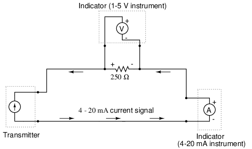
---------------------------------------- | Percent of | 4-20 mA | 1-5 V | | measurement | signal | signal | ---------------------------------------- | 0 | 4.0 mA | 1.0 V | ---------------------------------------- | 10 | 5.6 mA | 1.4 V | ---------------------------------------- | 20 | 7.2 mA | 1.8 V | ---------------------------------------- | 25 | 8.0 mA | 2.0 V | ---------------------------------------- | 30 | 8.8 mA | 2.2 V | ---------------------------------------- | 40 | 10.4 mA | 2.6 V | ---------------------------------------- | 50 | 12.0 mA | 3.0 V | ---------------------------------------- | 60 | 13.6 mA | 3.4 V | ---------------------------------------- | 70 | 15.2 mA | 3.8 V | ---------------------------------------- | 75 | 16.0 mA | 4.0 V | --------------------------------------- | 80 | 16.8 mA | 4.2 V | ---------------------------------------- | 90 | 18.4 mA | 4.6 V | ---------------------------------------- | 100 | 20.0 mA | 5.0 V | ----------------------------------------
La escala de bucle actual de 4 a 20 miliamperios no siempre ha sidotheestándar para los instrumentos actuales: durante un tiempo también hubo un estándar de 10-50 miliamperios, pero ese estándar ha quedado obsoleto desde entonces. Una de las razones de la eventual supremacía del bucle de 4-20 miliamperios fue la seguridad: con voltajes de circuito más bajos y niveles de corriente más bajos que en los diseños de sistemas de 10-50 mA, había menos posibilidades de sufrir lesiones personales por descarga eléctrica y/o la generación de chispas capaces de encender atmósferas inflamables en ciertos entornos industriales.
- REVISAR:
- A fuente actuales un dispositivo (generalmente construido con varios componentes electrónicos) que genera una cantidad constante de corriente a través de un circuito, muy parecido a una fuente de voltaje (batería ideal) que genera una cantidad constante de voltaje a un circuito.
- Un circuito de instrumentación de "bucle" actual se basa en el principio del circuito en serie de que la corriente es igual en todos los componentes para garantizar que no haya errores de señal debido a la resistencia del cableado.
- El estándar de señal de corriente analógica más común en el uso moderno es el "bucle de corriente de 4 a 20 miliamperios".
Tachogenerators
Un generador electromecánico es un dispositivo capaz de producir energía eléctrica a partir de energía mecánica, normalmente el giro de un eje. Cuando no están conectados a una resistencia de carga, los generadores generarán un voltaje aproximadamente proporcional a la velocidad del eje. Con una construcción y un diseño precisos, se pueden construir generadores para producir voltajes muy precisos para ciertos rangos de velocidades del eje, lo que los hace muy adecuados como dispositivos de medición de la velocidad del eje en equipos mecánicos. Un generador especialmente diseñado y construido para este uso se llamatacómetro or tacogenerador. A menudo, se utiliza la palabra "tach" (pronunciada "tack") en lugar de la palabra completa.
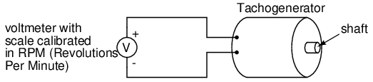
Al medir el voltaje producido por un tacogenerador, puede determinar fácilmente la velocidad de rotación de cualquier elemento al que esté conectado mecánicamente. Uno de los rangos de señal de voltaje más comunes utilizados con tacogeneradores es de 0 a 10 voltios. Obviamente, dado que un tacogenerador no puede producir voltaje cuando no está girando, el cero no puede estar "vivo" en este estándar de señal. Los tacogeneradores se pueden comprar con diferentes velocidades de "escala completa" (10 voltios) para diferentes aplicaciones. Aunque en teoría se podría utilizar un divisor de voltaje con un tacogenerador para ampliar el rango de velocidad medible en la escala de 0 a 10 voltios, no es aconsejable sobreacelerar significativamente un instrumento de precisión como este, o su vida útil se acortará.
Los tacogeneradores también pueden indicar el sentido de rotación mediante la polaridad del voltaje de salida. Cuando se invierte la dirección de rotación de un generador de CC de imán permanente, la polaridad de su voltaje de salida cambiará. En los sistemas de medición y control donde se necesita indicación direccional, los tacogeneradores proporcionan una manera fácil de determinarla.
Los tacogeneradores se utilizan frecuentemente para medir las velocidades de motores eléctricos, motores y los equipos que alimentan: cintas transportadoras, máquinas herramienta, mezcladoras, ventiladores, etc.
Thermocouples
Un fenómeno interesante aplicado en el campo de la instrumentación es el efecto Seebeck, que es la producción de un pequeño voltaje a lo largo de un cable debido a una diferencia de temperatura a lo largo de ese cable. Este efecto se observa y aplica más fácilmente con una unión de dos metales diferentes en contacto, cada metal produce un voltaje Seebeck diferente a lo largo de su longitud, lo que se traduce en un voltaje entre los dos extremos del cable (no unidos). La mayoría de los pares de metales diferentes producirán un voltaje medible cuando se caliente su unión, algunas combinaciones de metales producen más voltaje por grado de temperatura que otras:
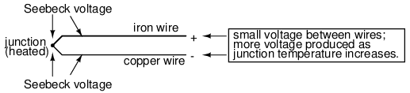
El efecto Seebeck es bastante lineal; es decir, el voltaje producido por una unión calentada de dos cables es directamente proporcional a la temperatura. Esto significa que la temperatura de la unión del cable metálico se puede determinar midiendo el voltaje producido. Por tanto, el efecto Seebeck nos proporciona un método eléctrico para medir la temperatura.
Cuando un par de metales diferentes se unen con el fin de medir la temperatura, el dispositivo formado se llamapar termoeléctrico. Los termopares fabricados para instrumentación utilizan metales de alta pureza para una relación temperatura/voltaje precisa (lo más lineal y predecible posible).
Los voltajes de Seebeck son bastante pequeños, de decenas de milivoltios para la mayoría de los rangos de temperatura. Esto los hace algo difíciles de medir con precisión. Además, el hecho de queanyLa unión entre metales diferentes producirá un voltaje dependiente de la temperatura, crea un problema cuando intentamos conectar el termopar a un voltímetro, completando un circuito:
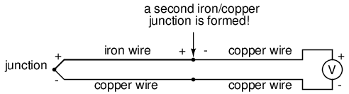
La segunda unión de hierro/cobre formada por la conexión entre el termopar y el medidor en el cable superior producirá un voltaje dependiente de la temperatura de polaridad opuesta al voltaje producido en la unión de medición. Esto significa que el voltaje entre los cables de cobre del voltímetro será una función de ladiferenciaen la temperatura entre las dos uniones, y no solo en la temperatura en la unión de medición. Incluso para los tipos de termopares en los que el cobre no es uno de los metales diferentes, la combinación de los dos metales que unen los cables de cobre del instrumento de medición forma una unión equivalente a la unión de medición:
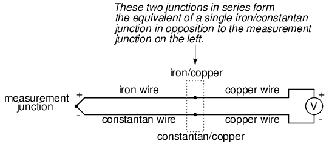
Esta segunda unión se llamareferencia or fríounión, para distinguirla de la unión en el extremo de medición, y no hay manera de evitar tener una en un circuito de termopar. En algunas aplicaciones, se requiere una medición de temperatura diferencial entre dos puntos, y esta propiedad inherente de los termopares se puede aprovechar para crear un sistema de medición muy simple.
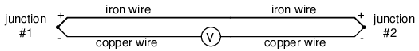
Sin embargo, en la mayoría de las aplicaciones la intención es medir la temperatura en un solo punto y, en estos casos, la segunda unión se convierte en un problema para funcionar.
La compensación del voltaje generado por la unión de referencia generalmente se realiza mediante un circuito especial diseñado para medir la temperatura allí y producir el voltaje correspondiente para contrarrestar los efectos de la unión de referencia. En este punto usted puede preguntarse: "Si tenemos que recurrir a alguna otra forma de medición de temperatura sólo para superar una idiosincrasia con los termopares, entonces ¿por qué molestarnos en usar termopares para medir la temperatura? ¿Por qué no utilizar simplemente esta otra forma de medición de temperatura, cualquiera que sea, para hacer el trabajo?" La respuesta es esta: porque las otras formas de medición de temperatura utilizadas para la compensación de la unión de referencia no son tan robustas ni versátiles como una unión de termopar, pero hacen bastante bien el trabajo de medir la temperatura ambiente en el sitio de la unión de referencia. Por ejemplo, la unión de medición del termopar se puede insertar en el conducto de humos de 1800 grados (F) de un horno de fundición, mientras que la unión de referencia se encuentra a treinta metros de distancia en un gabinete metálico a temperatura ambiente, midiendo su temperatura mediante un dispositivo que nunca podría sobrevivir al calor o la atmósfera corrosiva del horno.
El voltaje producido por las uniones de termopares depende estrictamente de la temperatura. Cualquier corriente en un circuito de termopar es función de la resistencia del circuito en oposición a este voltaje (I=E/R). En otras palabras, la relación entre temperatura y voltaje Seebeck es fija, mientras que la relación entre temperatura y corriente es variable, dependiendo de la resistencia total del circuito. ¡Con conductores de termopar lo suficientemente pesados, se pueden generar corrientes de más de cientos de amperios a partir de un solo par de uniones de termopar! (De hecho, he visto esto en un experimento de laboratorio, usando barras pesadas de cobre y aleaciones de cobre/níquel para formar las uniones y los conductores del circuito).
Para fines de medición, el voltímetro utilizado en un circuito de termopar está diseñado para tener una resistencia muy alta a fin de evitar caídas de voltaje que induzcan errores a lo largo del cable del termopar. El problema de la caída de voltaje a lo largo de la longitud del conductor es aquí incluso más grave que con las señales de voltaje de CC analizadas anteriormente, porque aquí solo tenemos unos pocos milivoltios de voltaje producidos por la unión. Simplemente no podemos permitirnos el lujo de tener ni siquiera un milivoltio de caída a lo largo de la longitud del conductor sin incurrir en graves errores de medición de temperatura.
Entonces, lo ideal es que la corriente en un circuito de termopar sea cero. Los primeros instrumentos indicadores de termopar utilizaban circuitos de medición de voltaje potenciométrico de equilibrio nulo para medir el voltaje de la unión. La primera línea de indicadores/registradores de temperatura "Speedomax" de Leeds & Northrup fue un buen ejemplo de esta tecnología. Los instrumentos más modernos utilizan circuitos amplificadores semiconductores para permitir que la señal de voltaje del termopar impulse un dispositivo indicador con poca o ninguna corriente consumida en el circuito.
Sin embargo, los termopares pueden construirse a partir de cables de gran calibre para una baja resistencia y conectarse de tal manera que generen corrientes muy altas para fines distintos a la medición de temperatura. Uno de esos propósitos es la generación de energía eléctrica. Al conectar muchos termopares en serie, alternando temperaturas frías y calientes con cada unión, se crea un dispositivo llamadotermopilase puede construir para producir cantidades sustanciales de voltaje y corriente:
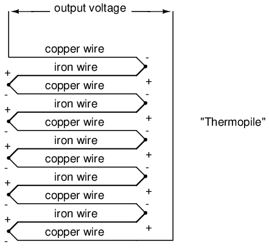
Con los conjuntos de uniones izquierda y derecha a la misma temperatura, el voltaje en cada unión será igual y las polaridades opuestas se cancelarán hasta un voltaje final de cero. Sin embargo, si el conjunto de uniones izquierdo se calentara y el conjunto derecho se enfriara, el voltaje en cada unión izquierda sería mayor que cada unión derecha, lo que daría como resultado un voltaje de salida total igual a la suma de todos los diferenciales de pares de uniones. En una termopila, así es exactamente como se configuran las cosas. Se aplica una fuente de calor (combustión, sustancia radiactiva fuerte, calor solar, etc.) a un conjunto de uniones, mientras que el otro conjunto está unido a un disipador de calor de algún tipo (enfriado por aire o agua). Curiosamente, a medida que los electrones fluyen a través de un circuito de carga externo conectado a la termopila, la energía térmica se transfiere de las uniones calientes a las uniones frías, lo que demuestra otro fenómeno termoeléctrico: el llamadoEfecto Peltier(corriente eléctrica que transfiere energía térmica).
Otra aplicación de los termopares es la medición depromediotemperatura entre varios lugares. La forma más sencilla de hacerlo es conectar varios termopares en paralelo entre sí. La señal de milivoltios producida por cada termopar se promediará en el punto de unión en paralelo. Las diferencias de voltaje entre las uniones caen a lo largo de las resistencias de los cables del termopar:
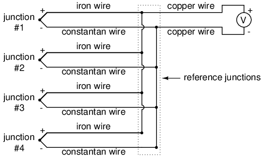
Desafortunadamente, sin embargo, el promedio exacto de estos potenciales de voltaje de Seebeck depende de que las resistencias de los cables de cada termopar sean iguales. Si los termopares están ubicados en diferentes lugares y sus cables se unen en paralelo en un solo lugar, es poco probable que los cables tengan la misma longitud. El termopar que tenga la mayor longitud de cable desde el punto de medición hasta el punto de conexión en paralelo tenderá a tener la mayor resistencia y, por lo tanto, tendrá el menor efecto sobre el voltaje promedio producido.
Para ayudar a compensar esto, se puede agregar resistencia adicional a cada una de las ramas del circuito de termopar en paralelo para hacer que sus respectivas resistencias sean más iguales. Sin resistencias de tamaño personalizado para cada rama (para que las resistencias sean exactamente iguales entre todos los termopares), es aceptable simplemente instalar resistencias con valores iguales, significativamente más altos que las resistencias de los cables del termopar, de modo que esas resistencias de los cables tengan un impacto mucho menor en la resistencia total de la rama. Estas resistencias se llamaninundarresistencias, porque sus valores relativamente altos eclipsan o "inundan" las resistencias de los propios cables del termopar:
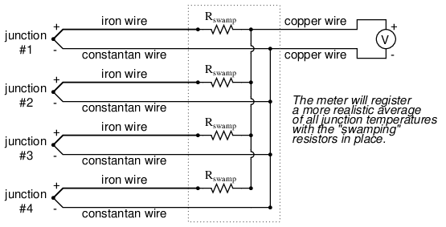
Debido a que las uniones de termopares producen voltajes tan bajos, es imperativo que las conexiones de los cables estén muy limpias y apretadas para un funcionamiento preciso y confiable. Además, la ubicación de la unión de referencia (el lugar donde los cables del termopar de metales diferentes se unen al cobre estándar) debe mantenerse cerca del instrumento de medición, para garantizar que el instrumento pueda compensar con precisión la temperatura de la unión de referencia. A pesar de estos requisitos aparentemente restrictivos, los termopares siguen siendo uno de los métodos más robustos y populares de medición de temperatura industrial en el uso moderno.
- REVISAR:
- The Efecto Seebeckes la producción de un voltaje entre dos metales unidos y diferentes que es proporcional a la temperatura de esa unión.
- En cualquier circuito de termopar, se forman dos uniones equivalentes entre metales diferentes. La unión colocada en el sitio de medición prevista se llamamediciónunión, mientras que la otra unión (única o equivalente) se llamareferenciaunión.
- Se pueden conectar dos uniones de termopar en oposición entre sí para generar una señal de voltaje proporcional a la temperatura diferencial entre las dos uniones. Un conjunto de uniones conectadas de esta manera con el fin de generar electricidad se denominatermopila.
- Cuando los electrones fluyen a través de las uniones de una termopila, la energía térmica se transfiere de un conjunto de uniones al otro. Esto se conoce como elEfecto Peltier.
- Se pueden conectar múltiples uniones de termopar en paralelo entre sí para generar una señal de voltaje que represente la temperatura promedio entre las uniones. Se pueden conectar resistencias de "inundación" en serie con cada termopar para ayudar a mantener la igualdad entre las uniones, de modo que el voltaje resultante sea más representativo de una temperatura promedio real.
- Es imperativo que la corriente en un circuito de termopar se mantenga lo más baja posible para una buena precisión de medición. Además, todas las conexiones de cables relacionadas deben estar limpias y apretadas. Una simple caída de milivoltios en cualquier lugar del circuito provocará errores de medición sustanciales.
pH measurement
Una medida muy importante en muchos procesos químicos líquidos (industriales, farmacéuticos, manufactureros, de producción de alimentos, etc.) es la del pH: la medida de la concentración de iones de hidrógeno en una solución líquida. Una solución con un valor de pH bajo se llama "ácida", mientras que una con un pH alto se llama "cáustica". La escala de pH común se extiende de 0 (ácido fuerte) a 14 (cáustico fuerte), y el 7 en el medio representa agua pura (neutral):
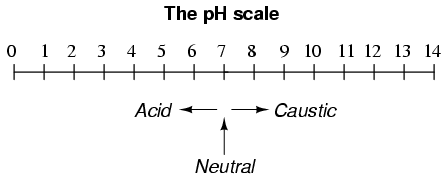
El pH se define de la siguiente manera: la letra minúscula "p" en pH representa el logaritmo común negativo (base diez), mientras que la letra mayúscula "H" representa el elemento hidrógeno. Por tanto, el pH es una medida logarítmica del número de moles de iones de hidrógeno (H+) por litro de solución. Por cierto, el prefijo "p" también se utiliza con otros tipos de mediciones químicas en las que se desea una escala logarítmica, siendo pCO2 (dióxido de carbono) y pO2 (oxígeno) dos ejemplos de ello.
La escala de pH logarítmica funciona así: una solución con 10-12moles de H+iones por litro tiene un pH de 12; una solución con 10-3moles de H+iones por litro tiene un pH de 3. Aunque es muy poco común, existe un ácido con un pH inferior a 0 y un cáustico con un pH superior a 14. Estas soluciones, comprensiblemente, son bastante concentradas yextremadamentereactivo.
Si bien el pH se puede medir mediante cambios de color en ciertos polvos químicos (la "tira de tornasol" es un ejemplo familiar de las clases de química de la escuela secundaria), el monitoreo y control continuo del proceso del pH requiere un enfoque más sofisticado. El enfoque más común es el uso de un electrodo especialmente preparado diseñado para permitir que los iones de hidrógeno en la solución migren a través de una barrera selectiva, produciendo una diferencia de potencial (voltaje) mensurable proporcional al pH de la solución:
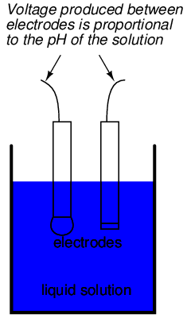
El diseño y la teoría operativa de los electrodos de pH es un tema muy complejo, que aquí se explora sólo brevemente. Lo que es importante entender es que estos dos electrodos generan un voltaje directamente proporcional al pH de la solución. A un pH de 7 (neutro), los electrodos producirán 0 voltios entre ellos. A un pH bajo (ácido) se desarrollará un voltaje de una polaridad, y a un pH alto (cáustico) se desarrollará un voltaje de la polaridad opuesta.
Una desafortunada limitación de diseño de los electrodos de pH es que uno de ellos (llamadomediciónelectrodo) debe estar construido con vidrio especial para crear la barrera selectiva de iones necesaria para filtrar los iones de hidrógeno de todos los demás iones que flotan en la solución. Este vidrio está dopado químicamente con iones de litio, que es lo que lo hace reaccionar electroquímicamente con los iones de hidrógeno. Por supuesto, el vidrio no es exactamente lo que llamarías un "conductor"; más bien, es un aislante extremadamente bueno. Esto presenta un problema importante si nuestra intención es medir el voltaje entre los dos electrodos. La ruta del circuito desde el contacto de un electrodo, a través de la barrera de vidrio, a través de la solución, hasta el otro electrodo y de regreso a través del contacto del otro electrodo, es una deextremadamentealta resistencia.
El otro electrodo (llamadoreferenciaEl electrodo) está hecho de una solución química de solución tampón de pH neutro (7) (generalmente cloruro de potasio) a la que se le permite intercambiar iones con la solución del proceso a través de un separador poroso, formando una conexión de resistencia relativamente baja con el líquido de prueba. Al principio, uno podría sentirse inclinado a preguntar: ¿por qué no simplemente sumergir un cable metálico en la solución para establecer una conexión eléctrica con el líquido? La razón por la que esto no funcionará es porque los metales tienden a ser altamente reactivos en soluciones iónicas y pueden producir un voltaje significativo a través de la interfaz de contacto metal-líquido. El uso de una interfaz química húmeda con la solución medida es necesario para evitar la creación de tal voltaje, que por supuesto sería interpretado erróneamente por cualquier dispositivo de medición como indicativo del pH.
A continuación se muestra una ilustración de la construcción del electrodo de medición. Observe la delgada membrana de vidrio dopada con litio a través de la cual se genera el voltaje de pH:
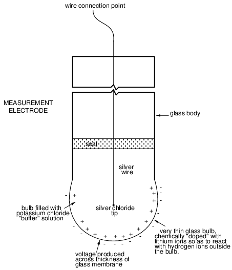
A continuación se muestra una ilustración de la construcción del electrodo de referencia. La unión porosa que se muestra en la parte inferior del electrodo es donde el tampón de cloruro de potasio y el líquido de proceso interactúan entre sí:
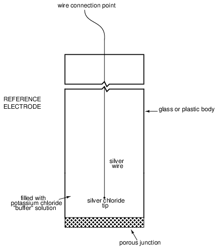
El propósito del electrodo de medición es generar el voltaje utilizado para medir el pH de la solución. Este voltaje aparece a lo largo del espesor del vidrio, colocando el cable plateado en un lado del voltaje y la solución líquida en el otro. El propósito del electrodo de referencia es proporcionar una conexión estable y sin voltaje a la solución líquida para que se pueda realizar un circuito completo para medir el voltaje del electrodo de vidrio. Mientras que la conexión del electrodo de referencia al líquido de prueba puede ser sólo de unos pocos kiloohmios, la resistencia del electrodo de vidrio puede oscilar entre diez y novecientos megaohmios, dependiendo del diseño del electrodo. Siendo que cualquier corriente en este circuito debe viajar a través deambosLas resistencias de los electrodos (y la resistencia presentada por el propio líquido de prueba), estas resistencias están en serie entre sí y, por lo tanto, se suman para formar un total aún mayor.
Un voltímetro analógico o incluso digital ordinario tiene una resistencia interna demasiado baja para medir el voltaje en un circuito de tan alta resistencia. El diagrama de circuito equivalente de un circuito típico de sonda de pH ilustra el problema:
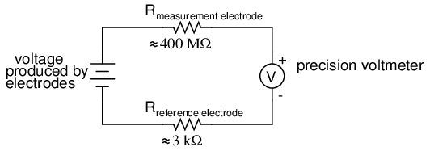
Incluso una corriente de circuito muy pequeña que viaje a través de las altas resistencias de cada componente del circuito (especialmente la membrana de vidrio del electrodo de medición) producirá caídas de voltaje relativamente sustanciales a través de esas resistencias, lo que reducirá seriamente el voltaje visto por el medidor. Para empeorar las cosas, el diferencial de voltaje generado por el electrodo de medición es muy pequeño, en el rango de milivoltios (idealmente 59,16 milivoltios por unidad de pH a temperatura ambiente). El medidor utilizado para esta tarea debe ser muy sensible y tener una resistencia de entrada extremadamente alta.
La solución más común a este problema de medición es utilizar un medidor amplificado con una resistencia interna extremadamente alta para medir el voltaje del electrodo, a fin de extraer la menor corriente posible a través del circuito. Con componentes semiconductores modernos, un voltímetro con una resistencia de entrada de hasta 1017Ω se puede construir con poca dificultad. Otro enfoque, rara vez visto en el uso contemporáneo, es utilizar una configuración de medición de voltaje potenciométrico de "equilibrio nulo" para medir este voltaje sin extraeranycorriente del circuito bajo prueba. Si un técnico desea comprobar la salida de voltaje entre un par de electrodos de pH, esta sería probablemente la forma más práctica de hacerlo utilizando únicamente equipos de medición de mesa estándar:
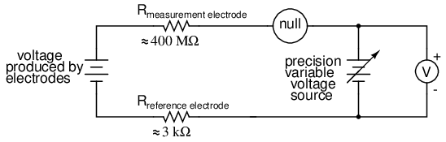
Como de costumbre, el técnico ajustaría el suministro de voltaje de precisión hasta que el detector nulo registrara cero, luego se revisaría el voltímetro conectado en paralelo con el suministro para obtener una lectura de voltaje. Con el detector "anulado" (registrando exactamente cero), debería haber corriente cero en el circuito del electrodo de pH y, por lo tanto, no habrá caída de voltaje en las resistencias de ninguno de los electrodos, lo que dará el voltaje real del electrodo en las terminales del voltímetro.
Los requisitos de cableado para electrodos de pH tienden a ser incluso más estrictos que los del cableado de termopares, exigiendo conexiones muy limpias y distancias cortas de cable (10 yardas o menos, incluso con contactos chapados en oro y cable blindado) para una medición precisa y confiable. Sin embargo, al igual que con los termopares, las desventajas de la medición del pH con electrodos se compensan con las ventajas: buena precisión y relativa simplicidad técnica.
Pocas tecnologías de instrumentación inspiran el asombro y la mística que impone la medición del pH, porque es muy incomprendida y difícil de solucionar. Sin entrar en detalles sobre la química exacta de la medición del pH, aquí se pueden dar algunas palabras de sabiduría sobre los sistemas de medición del pH:
- Todos los electrodos de pH tienen una vida finita y esa vida útil depende en gran medida del tipo y la gravedad del servicio. En algunas aplicaciones, la vida útil de un electrodo de pH de un mes puede considerarse larga, y en otras aplicaciones se puede esperar que los mismos electrodos duren más de un año.
- Debido a que el electrodo de vidrio (medición) es responsable de generar el voltaje proporcional al pH, es el que se debe considerar sospechoso si el sistema de medición no logra generar un cambio de voltaje suficiente para un cambio dado en el pH (aproximadamente 59 milivoltios por unidad de pH), o no responde lo suficientemente rápido a un cambio rápido en el pH del líquido de prueba.
- Si un sistema de medición de pH se "desvía", creando errores de compensación, es probable que el problema esté en el electrodo de referencia, que se supone que proporciona una conexión de voltaje cero con la solución medida.
- Debido a que la medición del pH es una representación logarítmica de la concentración de iones, existe una increíble variedad de condiciones de proceso representadas en la aparentemente simple escala de pH de 0 a 14. Además, debido a la naturaleza no lineal de la escala logarítmica, un cambio de 1 pH en el extremo superior (digamos, de 12 a 13 pH) no representa la misma cantidad de cambio de actividad química que un cambio de 1 pH en el extremo inferior (digamos, de 2 a 3 pH). Los ingenieros y técnicos de sistemas de control deben ser conscientes de esta dinámica si queremos tener alguna esperanza de lograrlo.controladorpH del proceso a un valor estable.
- Las siguientes condiciones son peligrosas para los electrodos de medición (vidrio): altas temperaturas, niveles extremos de pH (ya sea ácido o alcalino), alta concentración iónica en el líquido, abrasión, ácido fluorhídrico en el líquido (¡el ácido HF disuelve el vidrio!) y cualquier tipo de recubrimiento de material en la superficie del vidrio.
- Los cambios de temperatura en el líquido medido afectan tanto la respuesta del electrodo de medición a un nivel de pH determinado (idealmente a 59 mV por unidad de pH) como el pH real del líquido. Se pueden insertar dispositivos de medición de temperatura en el líquido y las señales de esos dispositivos se pueden usar para compensar el efecto de la temperatura en la medición del pH, pero esto solo compensará la respuesta mV/pH del electrodo de medición, ¡no el cambio de pH real del líquido del proceso!
Todavía se están logrando avances en el campo de la medición del pH, algunos de los cuales son muy prometedores para superar las limitaciones tradicionales de los electrodos de pH. Una de esas tecnologías utiliza un dispositivo llamadotransistor de efecto de campomedir electrostáticamente el voltaje producido por una membrana permeable a los iones en lugar de medir el voltaje con un circuito voltímetro real. Si bien esta tecnología tiene sus propias limitaciones, es al menos un concepto pionero y puede resultar más práctico en una fecha posterior.
- REVISAR:
- El pH es una representación de la actividad de los iones de hidrógeno en un líquido. Es el logaritmo negativo de la cantidad de iones de hidrógeno (en moles) por litro de líquido. Así: 10-11moles de iones de hidrógeno en 1 litro de líquido = 11 pH. 10-5.3moles de iones de hidrógeno en 1 litro de líquido = 5,3 pH.
- La escala de pH básica se extiende desde 0 (ácido fuerte) hasta 7 (agua pura, neutra) y 14 (cáustico fuerte). Las soluciones químicas con niveles de pH inferiores a cero y superiores a 14 son posibles, pero raras.
- El pH se puede medir midiendo el voltaje producido entre dos electrodos especiales sumergidos en la solución líquida.
- Un electrodo, hecho de un vidrio especial, se llamamediciónelectrodo. Su trabajo es generar un pequeño voltaje proporcional al pH (idealmente 59,16 mV por unidad de pH).
- El otro electrodo (llamadoreferenciaelectrodo) utiliza una unión porosa entre el líquido medido y una solución tampón de pH neutro estable (generalmente cloruro de potasio) para crear una conexión eléctrica de voltaje cero con el líquido. Esto proporciona un punto de continuidad para un circuito completo, de modo que el voltaje producido a través del espesor del vidrio en el electrodo de medición puede medirse con un voltímetro externo.
- La resistencia extremadamente alta de la membrana de vidrio del electrodo de medición exige el uso de un voltímetro con resistencia interna extremadamente alta, o un voltímetro de equilibrio nulo, para medir el voltaje.
Strain gauges
Si se estira una tira de metal conductor, se volverá más delgada y más larga, y ambos cambios darán como resultado un aumento de la resistencia eléctrica de un extremo a otro. Por el contrario, si una tira de metal conductor se somete a una fuerza de compresión (sin pandear), se ensanchará y acortará. Si estas tensiones se mantienen dentro del límite elástico de la tira de metal (para que la tira no se deforme permanentemente), la tira se puede utilizar como elemento de medición de la fuerza física, la cantidad de fuerza aplicada se infiere de la medición de su resistencia.
Un dispositivo de este tipo se llamamedidor de tensión. Las galgas extensométricas se utilizan con frecuencia en la investigación y el desarrollo de ingeniería mecánica para medir las tensiones generadas por la maquinaria. Las pruebas de componentes de aeronaves son un área de aplicación: pequeñas tiras extensímetro pegadas a miembros estructurales, enlaces y cualquier otro componente crítico de una estructura de avión para medir la tensión. La mayoría de las galgas extensométricas son más pequeñas que un sello postal y se parecen a esto:
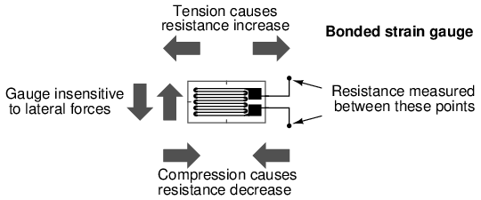
Los conductores de un medidor de tensión son muy delgados: si están hechos de alambre redondo, aproximadamente 1/1000 de pulgada de diámetro. Alternativamente, los conductores extensímetros pueden ser tiras delgadas de película metálica depositadas sobre un material de sustrato no conductor llamadotransportador. La última forma de galga extensométrica se representa en la ilustración anterior. El nombre "medidor adherido" se le da a los extensómetros que se pegan a una estructura más grande bajo tensión (llamadosmuestra de prueba). La tarea de unir galgas extensométricas a muestras de ensayo puede parecer muy sencilla, pero no lo es. "Medir" es un oficio en sí mismo, absolutamente esencial para obtener mediciones de deformación precisas y estables. También es posible utilizar un cable calibre desmontado estirado entre dos puntos mecánicos para medir la tensión, pero esta técnica tiene sus limitaciones.
Las resistencias típicas de las galgas extensométricas oscilan entre 30 Ω y 3 kΩ (sin tensión). Esta resistencia puede cambiar sólo una fracción de un porcentaje para todo el rango de fuerza del calibre, dadas las limitaciones impuestas por los límites elásticos del material del calibre y de la muestra de prueba. Fuerzas lo suficientemente grandes como para inducir mayores cambios de resistencia deformarían permanentemente la muestra de prueba y/o los propios conductores del medidor, arruinando así el medidor como dispositivo de medición. Por lo tanto, para utilizar la galga extensométrica como un instrumento práctico, debemos medir cambios extremadamente pequeños en la resistencia con alta precisión.
Una precisión tan exigente requiere un circuito de medición en puente. A diferencia del puente de Wheatstone mostrado en el último capítulo, que utiliza un detector de equilibrio nulo y un operador humano para mantener el estado de equilibrio, un circuito de puente extensímetro indica la deformación medida por el grado dedesequilibrio, y utiliza un voltímetro de precisión en el centro del puente para proporcionar una medición precisa de ese desequilibrio:
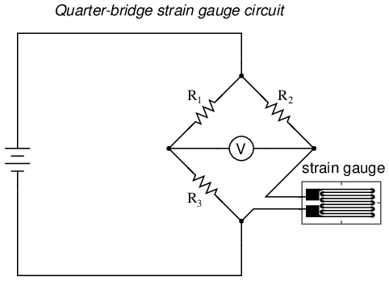
Normalmente, el brazo del reóstato del puente (R2en el diagrama) se establece en un valor igual a la resistencia del extensómetro sin aplicar fuerza. Los dos brazos de relación del puente (R1y r3) se igualan entre sí. Por lo tanto, sin aplicar fuerza al extensímetro, el puente estará equilibrado simétricamente y el voltímetro indicará cero voltios, lo que representa una fuerza cero en el extensímetro. A medida que la galga extensométrica se comprime o tensa, su resistencia disminuirá o aumentará, respectivamente, desequilibrando el puente y produciendo una indicación en el voltímetro. Esta disposición, en la que un solo elemento del puente cambia la resistencia en respuesta a la variable medida (fuerza mecánica), se conoce comocuarto de puentecircuito.
Como la distancia entre el medidor de tensión y las otras tres resistencias en el circuito puente puede ser sustancial, la resistencia del cable tiene un impacto significativo en el funcionamiento del circuito. Para ilustrar los efectos de la resistencia de los cables, mostraré el mismo diagrama esquemático, pero agregaré dos símbolos de resistencia en serie con el medidor extensométrico para representar los cables:
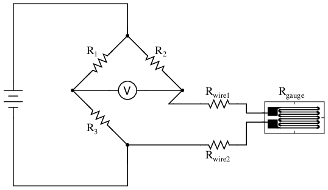
La resistencia de la galga extensométrica (Rindicador) no es la única resistencia que se mide: las resistencias de los cables Ralambre1y ralambre2, estando en serie con Rindicador, también contribuyen a la resistencia de la mitad inferior del brazo del reóstato del puente y, en consecuencia, contribuyen a la indicación del voltímetro. Esto, por supuesto, será interpretado erróneamente por el medidor como una tensión física en el medidor.
Si bien este efecto no se puede eliminar por completo en esta configuración, se puede minimizar agregando un tercer cable, conectando el lado derecho del voltímetro directamente al cable superior del extensímetro:
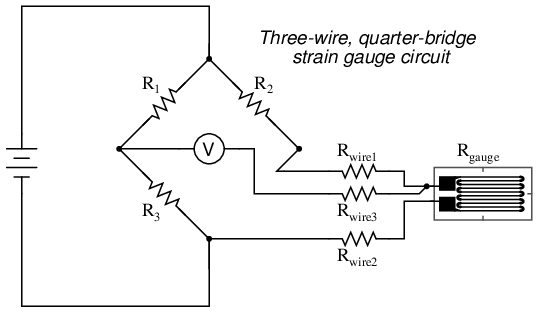
Debido a que el tercer cable prácticamente no transporta corriente (debido a la resistencia interna extremadamente alta del voltímetro), su resistencia no reducirá ninguna cantidad sustancial de voltaje. Observe cómo la resistencia del cable superior (Ralambre1) se ha "evitado" ahora que el voltímetro se conecta directamente al terminal superior del extensímetro, dejando solo la resistencia del cable inferior (Ralambre2) para contribuir con cualquier resistencia parásita en serie con el medidor. No es una solución perfecta, por supuesto, ¡pero es dos veces mejor que el último circuito!
Sin embargo, existe una manera de reducir el error de resistencia del cable mucho más allá del método que acabamos de describir y también ayudar a mitigar otro tipo de error de medición debido a la temperatura. Una característica desafortunada de las galgas extensométricas es la del cambio de resistencia con los cambios de temperatura. Esta es una propiedad común a todos los conductores, algunos más que otros. Por lo tanto, nuestro circuito de cuarto de puente como se muestra (ya sea con dos o tres cables que conectan el medidor al puente) funciona tan bien como termómetro como indicador de tensión. Si lo único que queremos hacer es medir la tensión, esto no es bueno. Sin embargo, podemos superar este problema utilizando una galga extensométrica "ficticia" en lugar de R.2, de modo queambosLos elementos del brazo del reóstato cambiarán la resistencia en la misma proporción cuando cambie la temperatura, cancelando así los efectos del cambio de temperatura:
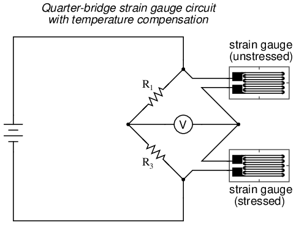
Resistencias R1y r3tienen el mismo valor de resistencia y las galgas extensométricas son idénticas entre sí. Sin aplicar fuerza, el puente debe estar en perfectas condiciones equilibradas y el voltímetro debe registrar 0 voltios. Ambos medidores están unidos al mismo espécimen de prueba, pero solo uno se coloca en una posición y orientación para estar expuesto a tensión física (elactivoindicador). El otro medidor está aislado de toda tensión mecánica y actúa simplemente como un dispositivo de compensación de temperatura (el"ficticio"indicador). Si la temperatura cambia, las resistencias de ambos calibres cambiarán en el mismo porcentaje y el estado de equilibrio del puente no se verá afectado. Sólo una resistencia diferencial (diferencia de resistencia entre las dos galgas extensométricas) producida por la fuerza física sobre la probeta puede alterar el equilibrio del puente.
La resistencia del cable no afecta la precisión del circuito tanto como antes, porque los cables que conectan ambos extensómetros al puente tienen aproximadamente la misma longitud. Por lo tanto, las secciones superior e inferior del brazo del reóstato del puente contienen aproximadamente la misma cantidad de resistencia parásita y sus efectos tienden a cancelarse:
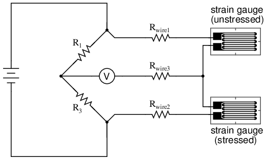
Aunque ahora hay dos galgas extensométricas en el circuito del puente, sólo uno responde a la tensión mecánica y, por lo tanto, todavía nos referiríamos a esta disposición comocuarto de puente. Sin embargo, si tomáramos el medidor de tensión superior y lo posicionáramos de manera que quede expuesto a la fuerza opuesta a la del medidor inferior (es decir, cuando se comprime el medidor superior, el medidor inferior se estirará y viceversa), tendremosambosLos calibres responden a la tensión y el puente responderá mejor a la fuerza aplicada. Esta utilización se conoce comomedio puente. Dado que ambas galgas extensométricas aumentarán o disminuirán la resistencia en la misma proporción en respuesta a los cambios de temperatura, los efectos del cambio de temperatura permanecen cancelados y el circuito sufrirá un error de medición mínimo inducido por la temperatura:
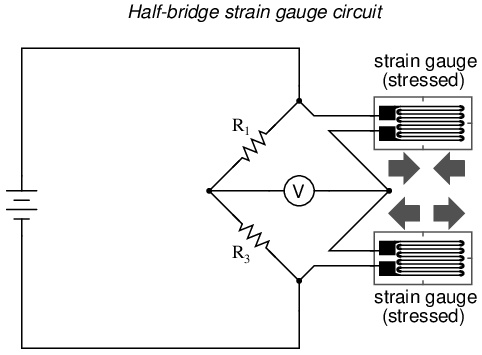
A continuación se ilustra un ejemplo de cómo se pueden unir un par de galgas extensométricas a una muestra de prueba para producir este efecto:
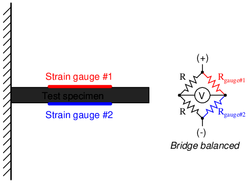
Sin aplicar fuerza a la muestra de prueba, ambas galgas extensométricas tienen la misma resistencia y el circuito puente está equilibrado. Sin embargo, cuando se aplica una fuerza hacia abajo al extremo libre de la muestra, se doblará hacia abajo, estirando el calibre #1 y comprimiendo el calibre #2 al mismo tiempo:
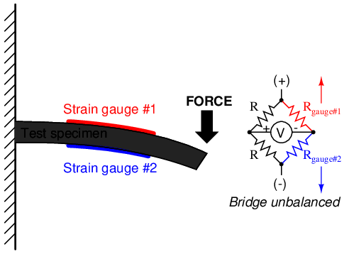
En aplicaciones donde estos pares complementarios de galgas extensométricas se pueden unir a la muestra de prueba, puede ser ventajoso hacer que los cuatro elementos del puente sean "activos" para una sensibilidad aún mayor. Esto se llama unpuente completocircuito:
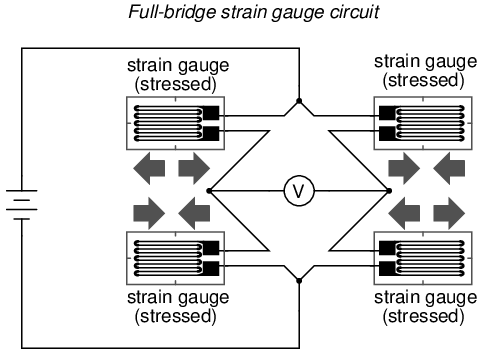
Tanto la configuración de medio puente como la de puente completo otorgan una mayor sensibilidad sobre el circuito de un cuarto de puente, pero a menudo no es posible unir pares complementarios de galgas extensométricas a la muestra de prueba. Por tanto, el circuito de cuarto de puente se utiliza frecuentemente en sistemas de medición de deformación.
Cuando sea posible, la mejor opción es utilizar la configuración de puente completo. Esto es cierto no sólo porque es más sensible que los demás, sino porque eslinealmientras que los demás no lo son. Los circuitos de cuarto de puente y medio puente proporcionan una señal de salida (desequilibrio) que sólo esaproximadamenteproporcional a la fuerza del extensómetro aplicada. La linealidad o proporcionalidad de estos circuitos puente es mejor cuando la cantidad de cambio de resistencia debido a la fuerza aplicada es muy pequeña en comparación con la resistencia nominal de los medidores. Sin embargo, con un puente completo, el voltaje de salida es directamente proporcional a la fuerza aplicada, sin aproximación (siempre que el cambio en la resistencia causado por la fuerza aplicada sea igual para los cuatro extensímetros).
A diferencia de los puentes de Wheatstone y Kelvin, que proporcionan mediciones en una condición de equilibrio perfecto y, por lo tanto, funcionan independientemente del voltaje de la fuente, la cantidad de voltaje de la fuente (o "excitación") importa en un puente desequilibrado como este. Por lo tanto, los puentes extensímetros se clasifican en milivoltios de desequilibrio producido.pervoltio de excitación,perunidad de medida de fuerza. Un ejemplo típico de galga extensométrica del tipo utilizado para medir fuerza en entornos industriales es 15 mV/V a 1000 libras. Es decir, con exactamente 1000 libras de fuerza aplicada (ya sea de compresión o de tracción), el puente se desequilibrará en 15 milivoltios por cada voltio de voltaje de excitación. Nuevamente, esta cifra es precisa si el circuito del puente está completamente activo (cuatro extensímetros activos, uno en cada brazo del puente), pero solo es aproximado para disposiciones de medio puente y cuarto de puente.
Los extensímetros se pueden comprar como unidades completas, con elementos extensímetros y resistencias de puente en una sola carcasa, sellados y encapsulados para protección contra los elementos, y equipados con puntos de sujeción mecánicos para fijarlos a una máquina o estructura. Un paquete de este tipo suele denominarsecelda de carga.
Como muchos de los otros temas tratados en este capítulo, los sistemas de galgas extensométricas pueden volverse bastante complejos y una disertación completa sobre galgas extensométricas estaría fuera del alcance de este libro.
- REVISAR:
- Un medidor de tensión es una tira delgada de metal diseñada para medir la carga mecánica cambiando la resistencia cuando se tensiona (estirada o comprimida dentro de su límite elástico).
- Los cambios de resistencia de las galgas extensométricas generalmente se miden en un circuito puente, para permitir una medición precisa de los pequeños cambios de resistencia y para proporcionar compensación por las variaciones de resistencia debidas a la temperatura.
Colaboradores
Los contribuyentes a este capítulo se enumeran en orden cronológico de sus contribuciones, desde el más reciente hasta el primero. Consulte el Apéndice 2 (Lista de colaboradores) para fechas e información de contacto.
Jason Stark(Junio de 2000): Formato de documentos HTML, que dio lugar a una segunda edición mucho más atractiva.
Lecciones en circuitos eléctricoscopyright (C) 2000-2023 Tony R. Kuphaldt, según los términos y condiciones delCC BY License.